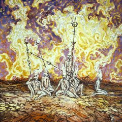
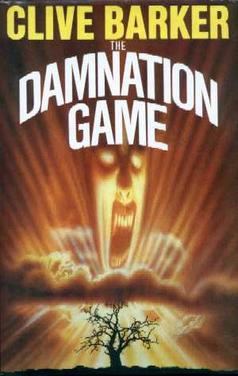
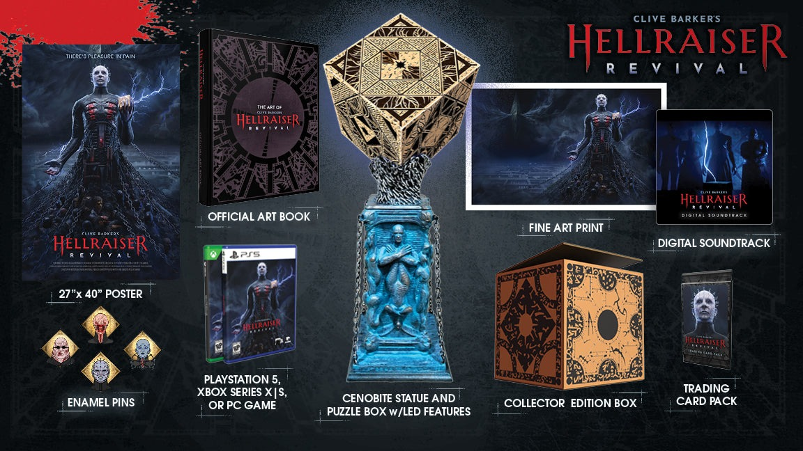

Upcoming · in Arbeit & im Schatten · nach dem Revelations-Archiv
Was kommt
Seit den Achtzigern erzählt Barker in jedem Interview von hundertundein Projekten, die er in Arbeit hat. Manche werden Welterfolge — andere lauern bis heute im Schatten. Das Archiv führt beides: die Werke in Arbeit und die Geister der Angekündigten.
Bücher in Arbeit

Worum es geht
Nach Jahren der Krankheit und Stille meldete sich Barker 2020 zurück — mit gleich vier Buchprojekten: einem neuen Roman, einer großen Erzählsammlung, einem halben Jahrhundert Poesie und den letzten beiden Abarat-Bänden.
Die Projekte
-
Deep Hill begann als Halloween-Roman mit dem Arbeitstitel Scarebaby. Als Barker das redigierte Manuskript zurückbekam, erkannte er sein Buch nicht wieder, zog es zurück und begann von vorn: größer, dunkler, eine unheimliche Invasion in einer Kleinstadt in Pennsylvania — eines der beängstigendsten Bücher, sagt er, die er je geschrieben habe, getrieben von der Wut über den Verfall unserer Kultur.
Revelations 2019/2020 · Daily Telegraph, 2020
-
Fear Eternal sammelt verstreute und neue Kurzgeschichten samt der Novelle Mercy and the Jackal — von den Nightbreed Chronicles über die Tortured-Souls-Erzählungen bis Chiliad. Barker nennt es das Nächste an einem Books of Blood, das er seit den Books of Blood geschrieben hat.
Revelations, 2020 · Den of Geek, 2020
-
The Presence of This Breath versammelt über 250 Gedichte aus fünf Jahrzehnten, herausgegeben von Paulo Andreas Lorca. Eine Kostprobe las Barker vorab am Telefon ein — mit gelegentlichen Einwürfen seines Papageis Malingo.
Revelations, September 2020
-
Und die Abarat-Saga wartet auf ihre Vollendung: Band vier trägt den Arbeitstitel Kry Rising, Band fünf Until The End Of Time — im Atelier stapeln sich weit über 500 fertige Gemälde für die Inseln.
Revelations-Archiv · Current Book Projects
Film & TV in Arbeit

Worum es geht
Fürs Kino sind Adaptionen von The Damnation Game, Abarat, The Thief of Always, Mr. Maximillian Bacchus und Tortured Souls in Entwicklung; fürs Fernsehen Serien zu Hellraiser, Nightbreed, Theatre of Blood, Weaveworld, Imajica und Lord of Illusions.
Die Projekte
-
HBO entwickelt seit 2020 eine Hellraiser-Serie: David Gordon Green soll den Piloten inszenieren, Mark Verheiden und Michael Dougherty schreiben. Kurz vor Halloween 2020 stieg Barker selbst als Executive Producer ein — die Mythologie solle zu ihren Wurzeln zurückkehren, zur dunkelsten Form des Bösen und der Kraft, ihr zu widerstehen.
Deadline, April & Oktober 2020
-
Nightbreed soll als Serie auferstehen: Seit 2018 arbeiten Morgan Creek, Syfy und Universal Cable Productions daran, Michael Dougherty schreibt und inszeniert, Barker produziert. Die Kultur, sagt er, habe endlich zu Nightbreed aufgeschlossen — sie sei bereit, die Monster zu umarmen.
Morgan Creek, 2018 · Revelations, 2012
-
Der Dauerläufer: The Damnation Game wurde 2001 von Phoenix Pictures gekauft und wanderte zu Warner — samt 40-Millionen-Gerüchten um Paul Newman und Sean Connery, die Barker selbst amüsiert bezweifelte. Für ihn bleibt der Stoff ideal fürs Kino: ein Faust ohne Teufel, der auf altmodische Art erschrecken soll.
Daily Variety, 2001 · Revelations, 2001
Games & Attraktionen

Worum es geht
Die Cenobiten wechseln das Medium: Im Juli 2025 kündigten Saber Interactive und Boss Team Games mit Hellraiser: Revival das erste große Hellraiser-Spiel an — und für 2026 ist die Mythologie bei Universals Halloween Horror Nights angekündigt. Den historischen Katalog — von Undying bis zu den Mazes — versammelt die Games-Seite.
Die Projekte
-
Hellraiser: Revival wird ein Single-Player-Spiel für PC, PlayStation 5 und Xbox Series: Spieler Aidan muss mit der Macht einer mysteriösen Puzzle-Box — der Genesis Configuration — seine Freundin aus dem Labyrinth befreien und sich dem Kult der Cenobiten stellen. Barker beschreibt die Arbeit am ersten echten Hellraiser-Spiel als Expedition in die dunkelsten Winkel seiner Vorstellung.
Saber Interactive & Boss Team Games · 22. Juli 2025
-
Und bei den Halloween Horror Nights 2026 der Universal Studios soll Hellraiser als eigenes Haunted House durch die Nebelmaschinen wandern.
Revelations-Archiv · Games and Attractions
Im Schatten
Worum es geht
Der größere Teil der Rubrik gehört den Geistern: an die achtzig Projekte, die angekündigt, entwickelt, verhandelt — und nie realisiert wurden. Das Archiv sammelt sie als Chronik der ungeschriebenen Bibliothek und des ungedrehten Kinos.
Die berühmtesten Geister
-
Bücher: ein Galilee 2, Cabal 2 und 3, ein Everville für Kinder, The Everything oder die Comedy of Comedies — Fortsetzungen und Ideen, die Barker in Interviews versprach und wieder verwarf.
Revelations-Archiv · Books
-
Film: Nightbreed 2 und 3, Midnight Meat Train 2 und 3, Barkers Version von The Mummy, Zombies vs. Gladiators — und ein Thief of Always als Animationsfilm.
Revelations-Archiv · Films
-
Fernsehen: gleich mehrere Anläufe zu den Books of Blood, zwei Hellraiser-Serien (1995 und 2012), Ectokid, Coldheart Canyon und die Damnation-Game-Miniserie, mit der alles begann.
Revelations-Archiv · Television
-
Und dazwischen alles andere: ein Hellraiser-Theaterstück, eine Oper nach The History of the Devil, Spiele von Demonik bis zum Ectosphere-Game, Comics wie Mythonaut oder Pandemonium 2.
Revelations-Archiv · Other Media
Abbildungen: Revelations-Archiv (clivebarker.info) · Artwork © Clive Barker bzw. der jeweiligen Rechteinhaber